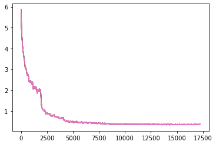

(Training an image classification model by Estevan Seyfried, and Maxime Sutters)
We watch them, feed them, count them, protect them, and more, but what even is a bird?
Since the dawn of time man has looked to the sky and dreamed of flight, only to behold the teeming masses of feathered scoundrels that have already claimed and squandered that gift. This humble project seeks to lay the foundations of identifying and understanding the foe, so that others may continue the work.
To begin classification of these godless heathens of the sky we started with variations of ResNet, which are deep residual networks pre-trained on the ImageNet Dataset.
In order to have the best data to train this model we attempted to use larger resolution training data. However we received a major setback when we realized the enemy had infiltrated even the hallowed halls of the Kaggle platform, and was attempting to halt our progress by throttling our allotted GPU memory reserves. We were forced to compromize and settled on a smaller resolution than originally planned, and further reduced the batch size so we would not go over memory limits.
transform_train = transforms.Compose([
transforms.Resize(300),
transforms.RandomCrop(300, padding=16, padding_mode='edge'),
transforms.RandomHorizontalFlip(),
transforms.ToTensor(),
])
...
trainloader = torch.utils.data.DataLoader(trainset, batch_size=40, shuffle=True, num_workers=2)
After some trial and error we settled on a configuration that seemed to perform well for the smaller models of ResNet18, it was time to begin training the more advanced recruits.
Training Results:
Final Score: 59.55 %
Training Results:
Final Score: 45 %
Training Results:
Final Score: 78.75 %
Here the birds struck back with a vengence, angered by our progress they sabotaged our training during the night. We managed to pick up where we left off by loading a checkpoint, and ceased further training till we tested how the current model performed.
Training Results:
Final Score: 0.651 %
With our alloted GPU Acceleration quota rapidly diminishing, we had to take drastic action to make sure we saved our progress throught the training cycle. The modified training code now took smaller images and saved some predictions every 5 Epochs. It reloads from the checkpoint and continues its training, never ceasing in its relentless quest to identify those vile birds!
# Train for 5 epocs, then plot progress, make predictions and continue
st = None
for i in range(5, 36, 5):
print("Training till {}".format(i))
losses = train(resnet, data['train'], epochs=i, schedule=sched,
print_every=100, state=st, checkpoint_path='./')
print("Plotting 0-{}".format(i))
plt.plot(smooth(losses,50))
print("Predicting...")
predict(resnet, data['test'], 'preds%d.csv'%(i))
print("Loading checkpoint {}".format(i))
st = torch.load('checkpoint-%d.pkl'%(i))
Training Results:
Final Score: 77.8 %
You doubt our Power?!!?
Investigate the Bird NotebooksTeam Dad Jokes